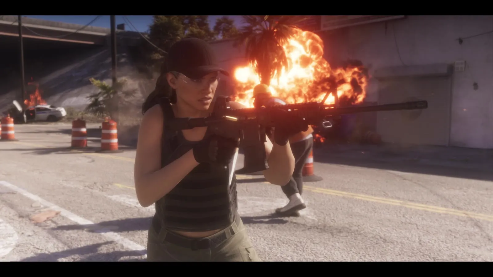

Всё оружие GTA 6: 196 позиций, цены, 24 Ammu-Nation и уникальные стволы
Опубликовано: · Обновлено:

- В «Прогрессе» 196 позиций: 53 ствола, 9 холодного, 4 взрывчатки и 130 вариантов.
- Самый дешёвый ствол — Nipper .38 за $550, самый дорогой — ракетница Hauners H-AT за $16 000.
- Снайперки, пулемёты и гранатомёты продают только 6 расширенных магазинов из 24.
- Покупки дороже $999 — после миссии Buck Me (банковский счёт).
- Для 100% нужно открыть 50 из 66 стандартных позиций, варианты не нужны.
Ammu-Nation на карте
Все 53 ствола с ценами
В меню «Прогресс» → «Оружие» игра считает 196 позиций: 53 огнестрельных ствола, 9 видов холодного, 4 вида взрывчатки и 130 вариантов. Варианты — это не новые модели, а особые версии тех же стволов: именные, раскрашенные, с готовым обвесом. Ниже все 53 базовых ствола по классам. Цены магазинные, без модификаций, и совпадают минимум в двух гайдах.
Пистолеты (8)
| Модель | Цена | Где и как |
|---|---|---|
| Scorpio Nipper .38 | $550 | самый дешёвый ствол в игре |
| Girardi ES9 | $700 | Ammu-Nation |
| Klose K17 | $975 | Ammu-Nation |
| Duke 1992 | $1 050 | Ammu-Nation; в части гайдов записан как «1922» |
| Girardi ES18 | $1 550 | Ammu-Nation |
| Klose K17 MCD | $1 700 | автоматический пистолет |
| Schlamm DRX | $2 100 | Ammu-Nation |
| Fairview Kalinga .50 | $3 100 | самый мощный пистолет |
Револьверы (5)
| Модель | Цена | Где и как |
|---|---|---|
| Wortham WCR1 | $600 | короткий «бульдог», легко спрятать |
| Hawk & Little .38 | $1 075 | Ammu-Nation |
| Duke Mustang .357 | $1 800 | Ammu-Nation |
| Scorpio Akulus | $3 000 | самый мощный револьвер в магазине |
| Hawk & Little Morgan | — | только Ultimate Edition, пара гравированных револьверов |
Пистолеты-пулемёты (8)
| Модель | Цена | Где и как |
|---|---|---|
| Wortham W-10 | $825 | Ammu-Nation |
| Zhang Wu Type 9 | $1 100 | Ammu-Nation |
| BZI Vatra | $1 200 | Ammu-Nation |
| Deever Tech DSG | $1 350 | стреляет очередями |
| Schlamm DW-9 | $1 750 | Ammu-Nation |
| Vom Feuer VF5 | $2 325 | Ammu-Nation |
| Vom Feuer VF5C | $2 600 | укороченная версия VF5 |
| ADB PD-90 | $3 350 | самый дорогой ПП, 30 патронов в магазине |
Дробовики (11)
| Модель | Цена | Где и как |
|---|---|---|
| Fortune & Son Moreland 850 | $700 | помповый; в миссии Gear Up — за полцены |
| Fortune & Son Gorse 425 | $850 | короткий помповый |
| Shrewsbury Drifter | $1 150 | двустволка |
| Shrewsbury Hobo | $1 325 | обрез двустволки |
| Mason & Keen Longshot | $1 425 | спортивная двустволка; открывается после других покупок в магазине |
| Mason & Keen Shortstraw | $1 625 | обрез Longshot; открывается после других покупок в магазине |
| Girardi AZ1200 | $2 300 | полуавтомат; открывается после других покупок в магазине |
| Girardi Verro | $2 700 | короткий полуавтомат |
| Girardi Super400 | $2 825* | полуавтомат |
| Kozlov KVGA-12 | $3 650* | автоматический |
| Goodwin Comshot 12 | $3 825 | самый дорогой дробовик |
Штурмовые винтовки (6)
| Модель | Цена | Где и как |
|---|---|---|
| Kozlov KZ-59 | $1 250 | открывается после других покупок в магазине |
| Duke 556 | $1 450 | есть уже в первом магазине |
| Kozlov Hind | $1 700 | Ammu-Nation |
| Hillinger Heathen | $2 450 | расширенный Ammu-Nation |
| ADB FRA | $2 900 | открывается после других покупок в магазине |
| Vom Feuer VF-G1 | $3 700 | расширенный Ammu-Nation — самая дорогая винтовка |
Тактические и малокалиберные (5)
| Модель | Цена | Где и как |
|---|---|---|
| Hawk & Little Mediator | $900 | 9 мм, 17 патронов; есть уже в первом магазине |
| Wortham W-14 | $1 400 | есть уже в первом магазине |
| Hillinger M306 | $2 375 | открывается после других покупок в магазине |
| Hillinger M306 TMR | $2 550 | марксманская; по данным Dexerto, открывается за «золото» во всех тирах |
| Wortham W-22 | — | малокалиберная для мелкой дичи; по данным GrandLeonida, только в охотничьих магазинах |
Снайперские винтовки (5)
| Модель | Цена | Где и как |
|---|---|---|
| Fortune & Son Laird 350 | $950 | расширенный Ammu-Nation |
| Shrewsbury SM-69 | $1 850 | расширенный Ammu-Nation; с ней охотятся на крупного зверя |
| Shrewsbury SMS-01 | $2 150 | после девятой колоды мишеней Брета |
| Fairview FF-SR | $2 950 | расширенный Ammu-Nation |
| Fairview FF-50 | $3 975 | расширенный Ammu-Nation — самая дорогая снайперка |
Пулемёты и тяжёлое (5)
| Модель | Цена | Где и как |
|---|---|---|
| ADB M350 | $10 000 | расширенный Ammu-Nation |
| Goodwin LMG 6 | $15 250* | расширенный Ammu-Nation |
| Hillinger Boomer | $12 000 | гранатомёт, расширенный Ammu-Nation |
| Deever Tech GLR40 | $15 500 | гранатомёт, расширенный Ammu-Nation |
| Hauners H-AT | $16 000 | ракетница — самое дорогое и самое мощное оружие игры |
* Цена есть пока только в одном гайде (Playhub или KeenGamer) — уточним, когда подтвердит второй источник. «Расширенный Ammu-Nation» — шесть магазинов с полным ассортиментом, список ниже.
Холодное оружие и взрывчатка
Холодное (9): бейсбольная бита, кастет, молоток, клюшка для гольфа, нож, тяжёлый тесак (Heavy-Duty Blade), гаечный ключ, кий и выкидной нож. Под общим «ножом» в игре прячется целое семейство: охотничий, боевой, туристический, подводный и другие клинки. Часть продаётся в Ammu-Nation, остальное подбирают в мире.
Взрывчатка (4): светошумовая граната, осколочная граната, коктейль Молотова и бомба-липучка. Отдельно от этих 66 позиций есть снаряжение: подводный гарпун Arras Bullhead, бинокль и металлоискатель — гарпун и металлоискатель появляются в заданиях кладоискателя Кентона, начиная с Island Dreams.
24 магазина Ammu-Nation: где что продают
Оружейных в Леониде 24, и ассортимент у них разный. Главное правило: снайперские винтовки, пулемёты, гранатомёты и ракетница продаются только в шести расширенных магазинах. Все точки — на карте выше.
| Тип магазина | Где |
|---|---|
| Ограниченный (1) | Chuck’s Tackle & Shot — Ки-Ленто, рядом с домом Джейсона. Первый магазин игры |
| Обычные (15) | Barrage Gun Supply (Саутвинд), Richardson Hunting Supplies, Hamlet Traders, Tequesta Guns & Ammo, Vice City Firearms (Салтон), Martez Empeños (Литл-Куба), Jackson Firearms (Бальсеро), Vice City Gun & Pawn (Рокридж), Pawn & Gun — Crosstown, Quickscope (центр Вайс-Сити), Zenon’s Pawn Shop (Ла-Перл), Tactical Outlet Guns (Белвилл), Pawn & Gun — Port Gellhorn, Gellhorn Outfitters, Biff’s Gun Supply |
| Охотничьи (2) | Guns Aplenty! (округ Мариана) и Rusty Willis Jr. Hunting Supplies (округ Ламмокс) |
| Расширенные (6) | Big Shots (Хэмлет), Woodhatch (Капри), Phil’s Ammu-Nation (Саутсайд), Black Eagle (Бальсеро, у тира Griffin), Iron & Oak (Стокъярд), Prestige Firearms (север Ocean Beach) |
- Покупки дороже $999 оплачиваются с банковского счёта BuckMe — он появляется после миссии Buck Me в первой главе. До неё доступны только дешёвые стволы.
- Часть моделей скрыта: в витрине они появляются после того, как вы купите в этом магазине другие стволы.
- Оружие общее: купил один герой — оно есть у обоих, а модификации, патроны и аптечки у каждого свои.
- При себе — два малых и два больших ствола. Остальное лежит в шкафчике (он есть в каждом Ammu-Nation) и в багажнике личной машины.
- Выброшенное не пропадает: купленное оружие снова забирают из шкафчика.
130 вариантов: именные, магазинные и спрятанные
Варианты в «Прогрессе» отмечаются отдельно, но для 100% не нужны. Многие лежат в мире на фиксированных местах: в сейфах, ящиках, затонувших лодках и даже на деревьях. Часть продаётся в отдельных магазинах, обычно по одному-два варианта в каждом. Ещё часть выдают по сюжету.
Бесплатные — подтверждено двумя гайдами
| Вариант | Где лежит |
|---|---|
| Assassin Nipper .38 | Пермит-Кис, к югу от Ки-Ленто: люк в полу заброшенного судна |
| Smuggler Gorse 425 | Пермит-Кис: лодка контрабандистов на соседнем островке — удобно забрать вместе с Assassin, нужна лодка или гидроцикл |
| Turnt Nipper .38 | Бобкэт-Байт: застрявший на дереве параплан |
| Couch Potato Mustang .357 | Порт-Геллхорн: диван, висящий на дереве |
Только в Phil’s Ammu-Nation
| Вариант | Где | Цена |
|---|---|---|
| Star Spangled 556 | Phil’s Ammu-Nation, витрина | $3 050 |
| Honky Tonk Mustang .357 | Phil’s Ammu-Nation, витрина | $3 780 |
| Klose K17 MCD (набор) | Phil’s Ammu-Nation | $5 055 |
| Girardi Super400 (набор) | Phil’s Ammu-Nation | $7 445 |
| ADB M350 (набор) | Phil’s Ammu-Nation | $13 455 |
По данным игроков, не проверено
- The Silver 1992 — витрина Big Shots, $2 210
- Stoner K17 MCD — номер 115 мотеля Big Day у шоссе US-35
- Deadringer 1992 и Money Bag 1992 — два трейлера на реке Моро
- Martha’s 1992 — камин в хижине Outlaw’s Cabin
- Cargo H&L .38 — жёлтый контейнер в порту Вайс-Сити
- Black Eagle Import Kalinga — сейф на складе Black Eagle в Бальсеро, код виден на экране компьютера
- Conspiracist Type 9 — арсенал под трейлером в Бальсеро
- Cold War 556 — бункер у Биг-Пайн на севере округа Мариана
- Drug Mule KZ-59 — затонувший катер у Рикезас-Кис
- Hellspawn Comshot 12 — испытание в лагере на западе Северного Келли
- Unpacked Comshot 12 — бесплатно на Ки-Ленто
- The Patriarch DRX — под водой у водохранилища Калага
- Sand Storm ES9 (Big Shots), NITE Raptor K17 (Black Eagle) и Woodhatch Longshot (Woodhatch) — продаются в своих магазинах
Эти точки пока описаны только в одном источнике (BeatCop, GrandLeonida, KeenGamer, Ultimate Guide 6, The Big Lead). Подтвердим или поправим, когда появится второй гайд.
Все известные варианты по базовым моделям
- Nipper .38: Mahi, Assassin, Turnt
- Kalinga .50: Gil’s, Black Eagle Import
- ES9 / ES18: Sand Storm ES9, Quarter Mile ES9, The Guardian ES18, Duval Signature ES9
- K17 / K17 MCD: NITE Raptor, EJ’s, PTT Youngin$, San4San, Caminos Signature K17; Dumpster и Stoner K17 MCD
- Duke 1992: The Silver, Raul’s, Monty’s, Deadringer, Money Bag, Martha’s
- Schlamm DRX: Rogue Alpha, The Patriarch
- H&L .38: Jack Sheepe, Donnie’s, Lyle’s, Ride Free, Cargo
- WCR1 / Akulus: Iron & Oak WCR1; Swamp Bait и Kingfishers Akulus
- Mustang .357: Honky Tonk, Couch Potato
- Пистолеты-пулемёты: Dazzler и Furry DW-9; Crabshack и Guardia Brothers VF5; Scrapper VF5C; Spangled, Chronic, Double Cross, Kolt & Associates Vatra; Neon Sunset, Conspiracist, Marabunta Grande Type 9; Moneymaker, Roxy’s, Bae-Luxe’s, Tyrone’s, Chromium, Little Friend W-10; Eris Fresh DSG
- Дробовики: Final Chapter KVGA-12 и Shortstraw; Unpacked и Hellspawn Comshot 12; Woodhatch Longshot; Watcher Pro, Gutterball, CPD Moreland 850; Basher, Smuggler, San4San Gorse 425; Bruiser и Hostile Super400; Darknite и Dirty Drifter; Backdoor и Marabunta Grande Hobo; Nitepower AZ1200; Throttler Verro
- Штурмовые винтовки: Little Cuba Hind; Drug Mule, Marabunta Grande, San4San, Pete’s, La Polilla Negra, Nightmare KZ-59; Guardia Brothers FRA; Vice City и Kingpin Heathen; Star Spangled, Raul’s CQB, Raul’s Heist, Cockroach Xtreme, Clunker, Kolt & Associates, GRX, Cold War 556; La Polilla Negra VF-G1
- Винтовки и пулемёты: Fincredible, Mister Mangrove, Twin’s, Hunter’s, Kingfishers Laird 350; Cruel Huntsman’s, Killtelligence, FIB, Firebreak SM-69; Gun Nut и IAA SMS-01; Internal Affairs FF-SR; Island Poacher FF-50; Mossy Mediator; Black Eagle Import M306 TMR; Kingfishers и Redneck W-22; Shack Attack W-14; Francisco’s и Mercenary LMG 6
- Биты: Buntosaurus, Bae-Luxe’s
Названия — как в игре. Около 20 вариантов из 130 пока не опубликовал ни один гайд.
Именное оружие из сюжета и изданий
| Оружие | Где взять |
|---|---|
| Monty’s 1992 (пистолет Монти) | The Missing Link — подобрать до первого врага, потом пропадёт |
| Gil’s Kalinga .50 | Safe Word |
| Bae-Luxe’s Bat | Cooties |
| Roxy’s W-10 и Bae-Luxe’s W-10 | Photo/Shoot |
| Klose K17 с глушителем | Car Service — в багажнике у разборки |
| Shrewsbury SMS-01 | девятое охотничье задание Брета |
| Гравированные Girardi ES9 и Klose K17, пара револьверов Hawk & Little Morgan | Ultimate Edition |
| Раскраска Vintage Vice City | бонус Vintage Vice City Pack |
Сколько оружия нужно для 100%
Для 100% нужно открыть любые 50 из 66 стандартных позиций (53 ствола, 9 холодного, 4 взрывчатки). Варианты не нужны. Быстрее всего набрать 50 в расширенных магазинах: там больше всего моделей. Прогресс виден в «Прогресс» → «Оружие». Весь чек-лист — в разделе 100% в GTA 6.
Как работает оружие
- Оружие видят. Полиция запоминает приметы, в том числе оружие. Дробовик в руках привлекает больше внимания, чем дробовик за спиной.
- Оружие можно выбросить, чтобы сбросить приметы, — вместе со сменой одежды и машины.
- Два ствола переключаются без колеса, а оружие с пола подбирается прямо в бою (Engadget).
- Арсенал возят в багажнике. Свою машину можно вызвать через приложение Scooter Bros — в ней хранятся купленное оружие и запасная одежда.
Все механики — в статье Новые механики GTA 6: что изменилось и в карточке справочника «Стрельба».
Частые вопросы
Сколько оружия в GTA 6?
196 позиций в меню «Прогресс»: 53 огнестрельных ствола, 9 видов холодного оружия, 4 вида взрывчатки и 130 вариантов.
Какое самое дорогое оружие в GTA 6?
Ракетница Hauners H-AT — $16 000. Её, как и гранатомёты с пулемётами, продают только в расширенных Ammu-Nation.
Где купить снайперскую винтовку в GTA 6?
Только в расширенных Ammu-Nation: Big Shots (Хэмлет), Woodhatch (Капри), Phil’s (Саутсайд), Black Eagle (Бальсеро), Iron & Oak (Стокъярд) и Prestige Firearms (Ocean Beach).
Почему нельзя купить оружие дороже $999?
Такие покупки оплачиваются с банковского счёта BuckMe, который открывает миссия Buck Me в первой главе.
Сколько оружия нужно для 100%?
Любые 50 из 66 стандартных позиций; варианты для 100% не нужны.
Где найти уникальное оружие бесплатно?
Например, Assassin Nipper .38 и Smuggler Gorse 425 лежат на заброшенных лодках в Пермит-Кис, а Couch Potato Mustang .357 — на диване, застрявшем на дереве в Порт-Геллхорне.
Источники: PowerPyx — «GTA 6 All Weapons» и «All Ammu-Nation Gun Stores», 18–27.11.2026; Ultimate Guide 6 — «GTA 6 Weapon Prices» и «Ammu-Nation stores and prices», 21.11.2026; KeenGamer — «GTA 6: All Weapons List and How to Get Them», 28.11.2026; Dexerto GTA 6 Wiki — оружие, 19.11.2026; GrandLeonida — «Ammu-Nation Stores and Unique Weapons», 19.11.2026; gta6.house — Ammu-Nation, 26.11.2026; G2A News — «GTA 6 full weapons guide», 20.11.2026; Playhub — список оружия, 2026; games.gg и NoobFeed — уникальные стволы Пермит-Кис; BeatCop — бесплатные варианты, 2026; Rockstar Games — описание Ultimate Edition.
Каждый день — новости, фишки и секреты GTA 6 за 30 секунд. Подписывайтесь:
YouTubeInstagramTikTok